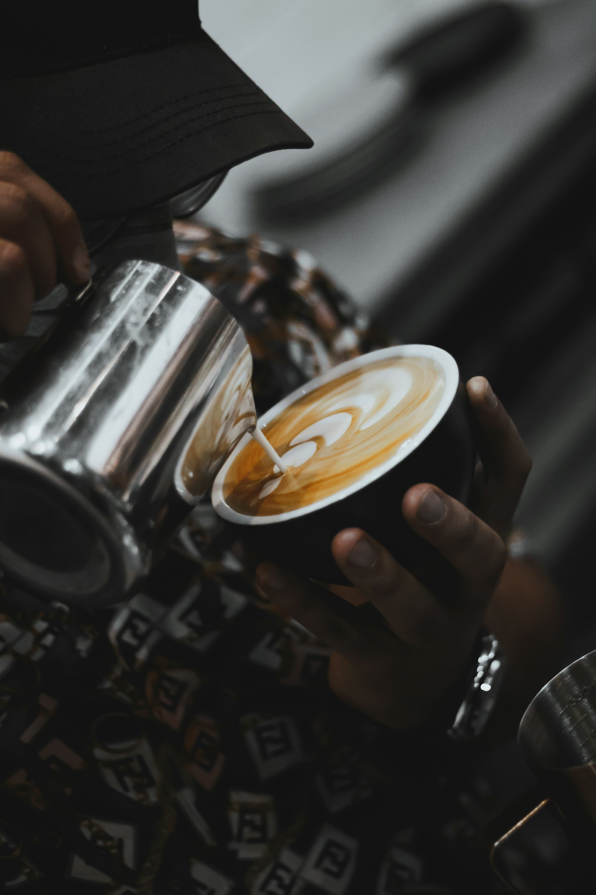
Кофе
- Американо, эспрессо30к
- Капучино, латте40к
- Флэт уайт45к
- Раф50к
- Испанский латте50к
- Кокандский кофе77к
Добавки
- Сироп10к
- Шот эспрессо10к
- Шот мёда10к
- Альтернативное молоко15к
Кофейня в Ташкенте, где на стенах ковры, над входом неон, а на каждом стакане своя фраза. Открыто круглосуточно.
«Увидимся на Патриках» — так в Москве зовут на встречу к Патриаршим прудам, где принято гулять и никуда не спешить. В Ташкенте эта фраза стала названием кофейни и значит простое: встретимся за кофе. Кофейня «Патрики» одна, на Тараса Шевченко, 8. А чтобы кофе был ближе, по городу открылись мини-точки Monte by Patriki, где можно взять кофе и чай с собой.
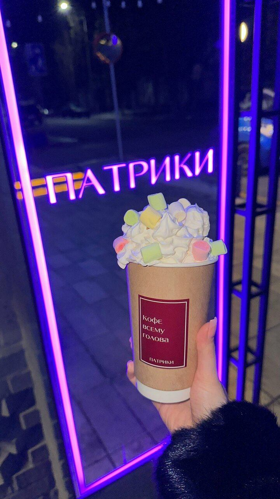
Розовая вывеска над входом, чтобы найти нас даже в три часа ночи.
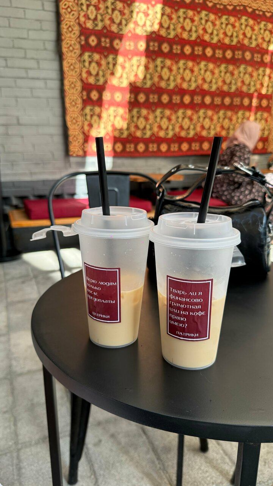
Настоящие ковры на стенах, чтобы было по-домашнему, как у бабушки.
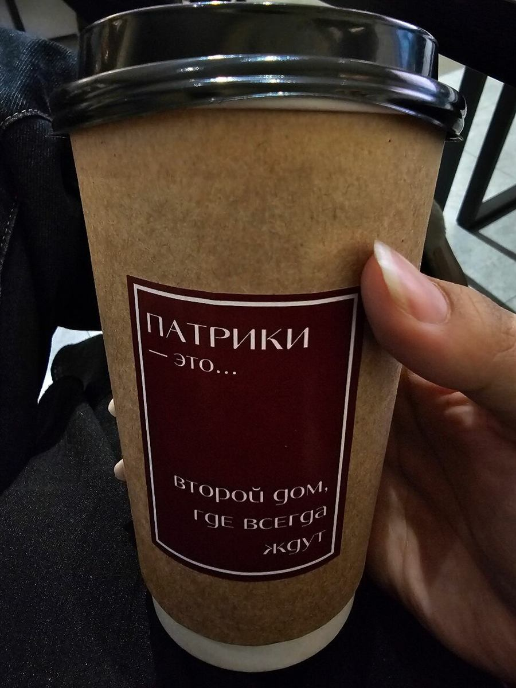
Бордовая наклейка с фразой на каждом стакане, чтобы кофе поднимал настроение дважды.
Душевное место, куда приходят не только за кофе.
В «Патриках» легко случайно встретить знакомых, а можно специально позвать друзей, сесть за столик и никуда не торопиться. Днём на веранде под тентом, ночью у неона.
На стенах настоящие ковры, на столах фирменные стаканы. Заходят на минуту за кофе с собой, а остаются на час.
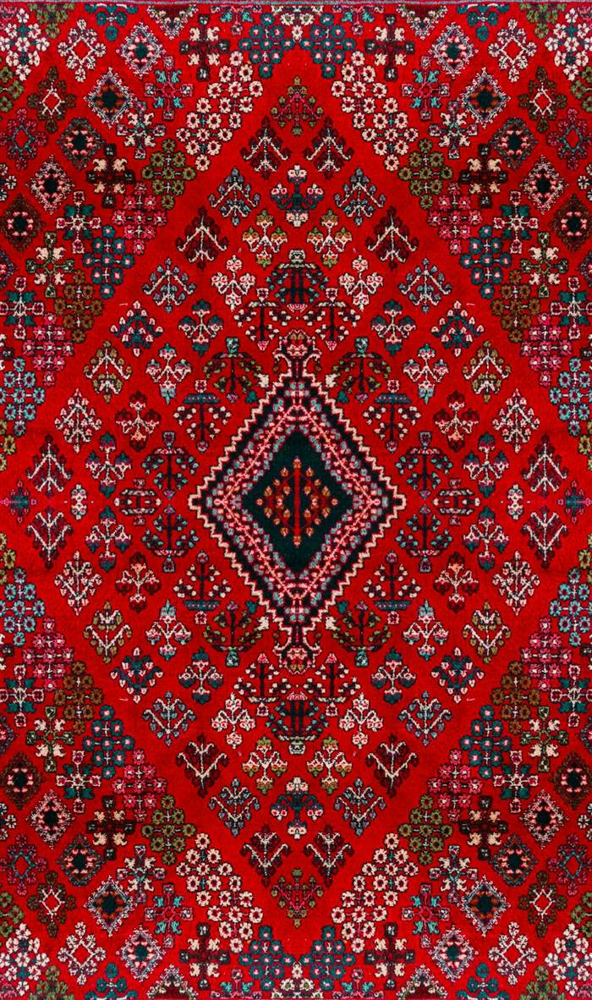
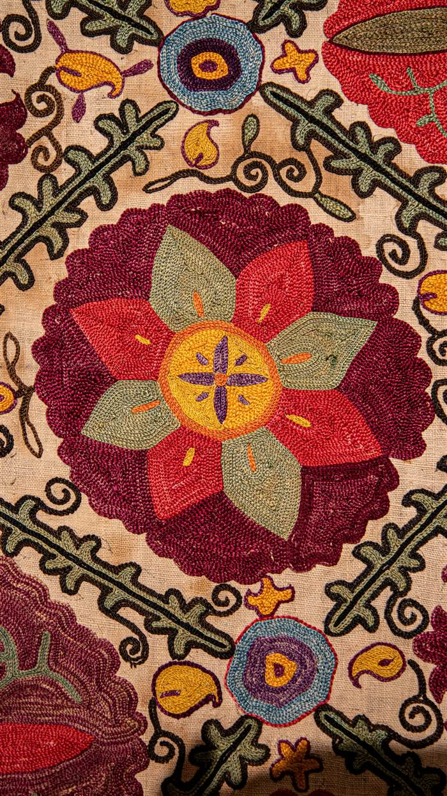
У входа висит меловая доска, и фраза на ней регулярно меняется. Вот некоторые из них, а новые появляются в Instagram. Наведите мышку, чтобы остановить ленту.
5,0 из 5 на Яндекс Картах, 367 оценок
Сладкая и сытная. Что сегодня на витрине, подскажет бариста.
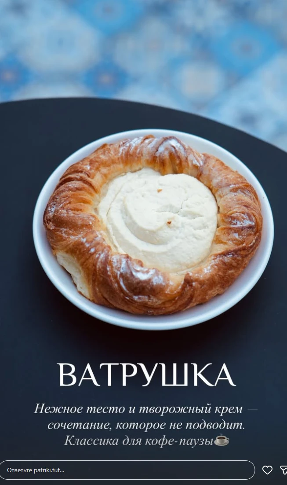
Нежное тесто и творожный крем. Классика для кофе-паузы.
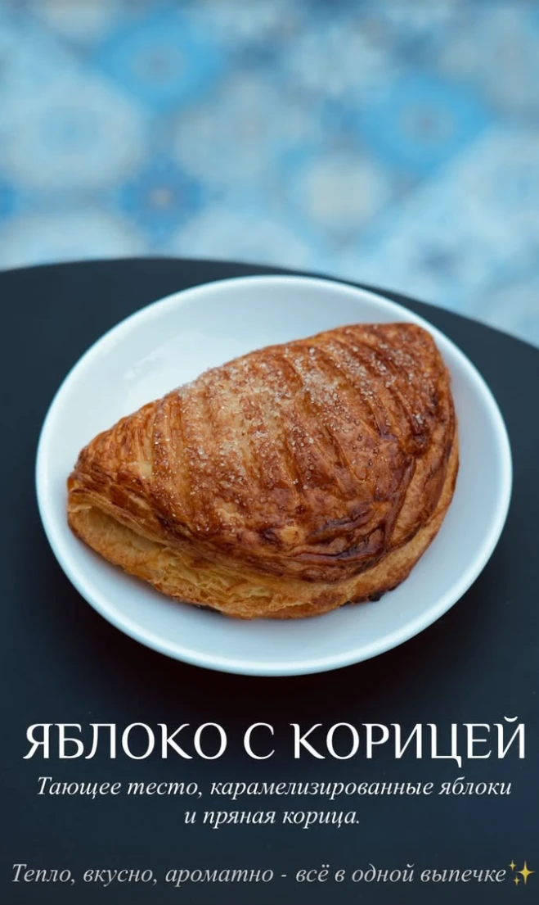
Тающее тесто, карамелизированные яблоки и пряная корица.
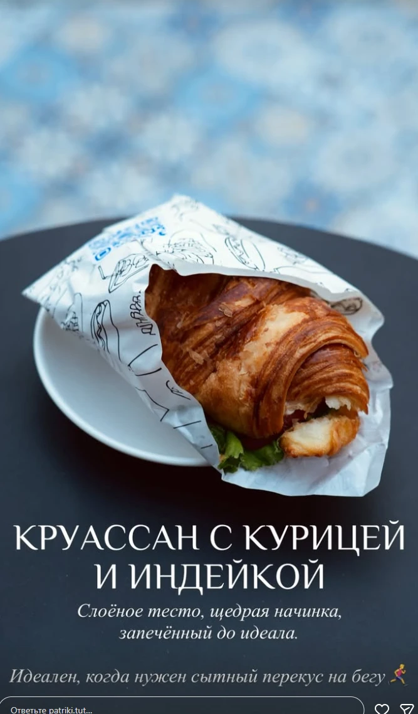
Слоёное тесто и щедрая начинка. Сытный перекус на бегу.
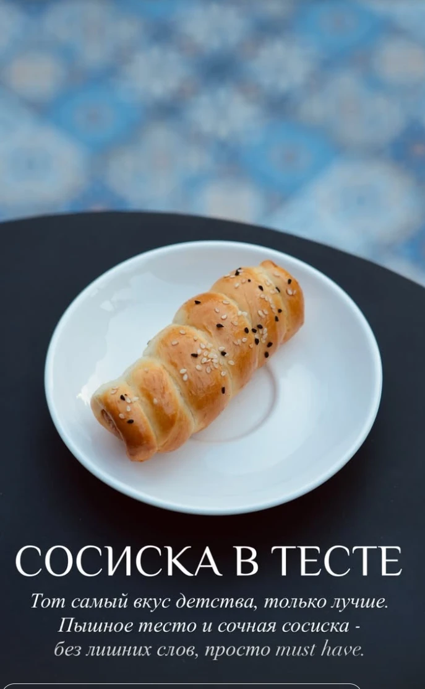
Пышное тесто и сочная сосиска. Тот самый вкус детства.
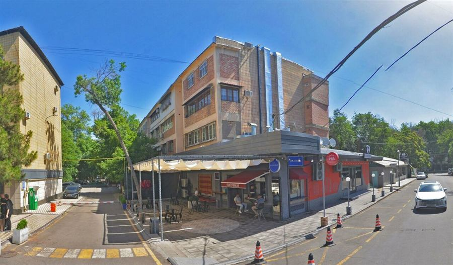
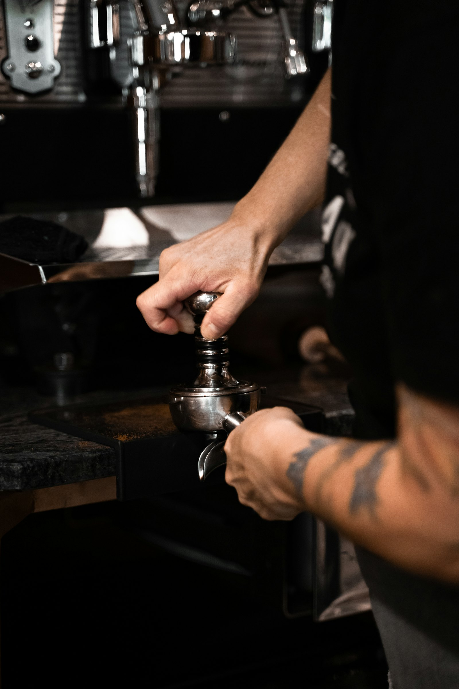
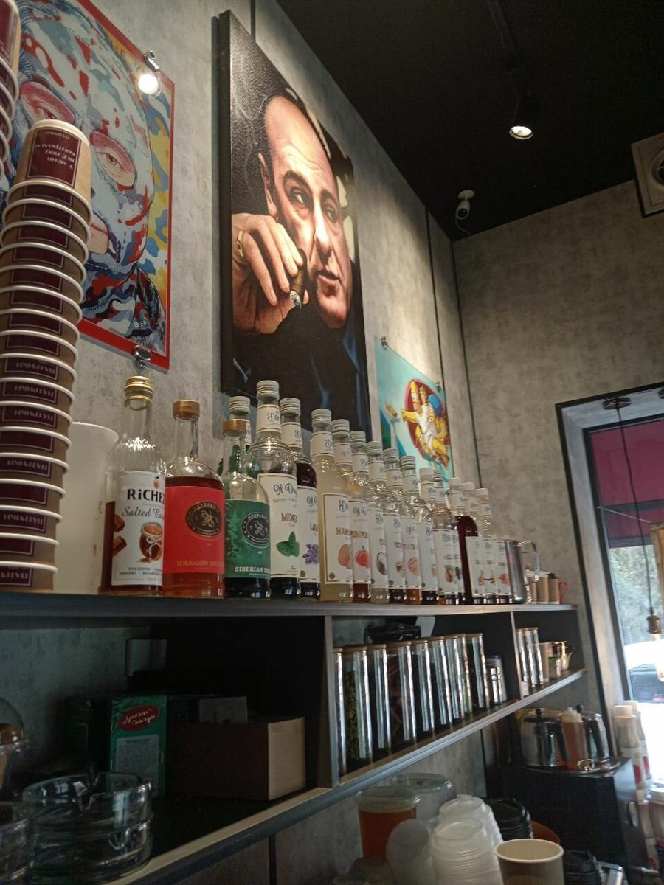
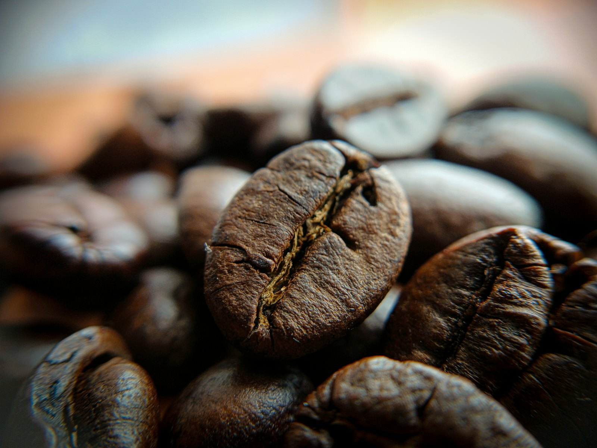
Работаем круглосуточно. Телефон один на все точки: +998 90 003 00 33.
Кофейня с коврами, неоном и летней верандой. Здесь можно сесть, никуда не торопиться и встретиться с друзьями.
Мини-точки «Патриков»: кофе, чай и лимонады с собой.